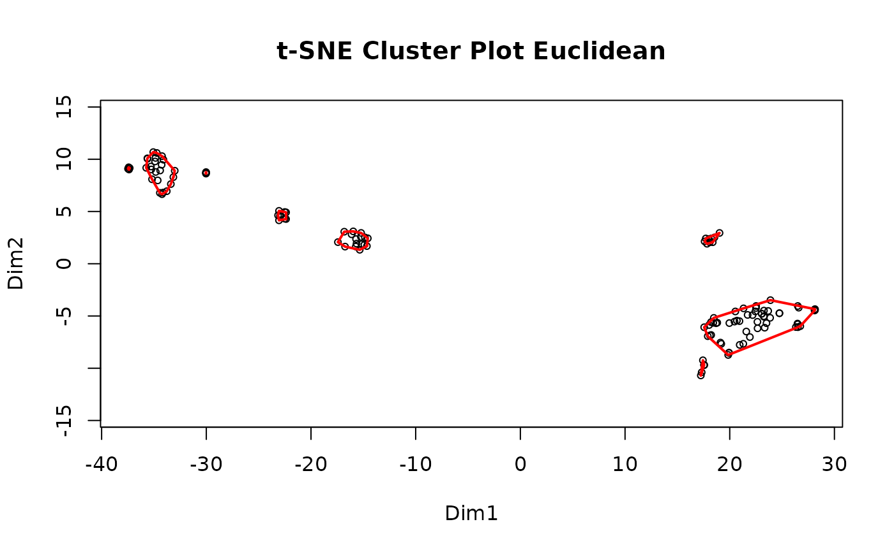
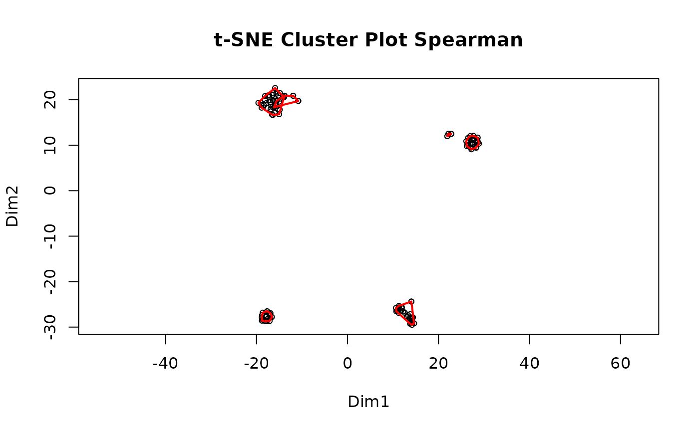
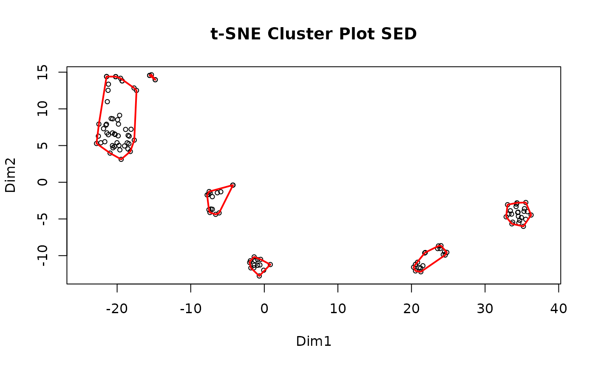

Evaluate Cluster Quality from PTM Data
EvaluateClusters.RdComputes a set of diagnostic statistics and a composite quality index for
each cluster in a cluster list, using the original PTM data matrix as the
reference. The function consolidates four previous evaluation functions
(clust.eval.1, nbclust.eval, lincsclust.eval, and clust.eval) into
a single interface controlled by three arguments: data.type,
index.mode, and use.slope.
Arguments
- clusterlist
A named or unnamed list of clusters as returned by
MakeClusterList(). Each element must be a character vector of gene / PTM names or a data frame with a column namedPTMnames(the format produced byMakeClusterList).- tbl.sc
Numeric data matrix with PTMs / genes as row names and samples as column names. This is the same table passed to
MakeClusterList().- data.type
Character string specifying the nature of the input data. One of:
"ratio"(default)TMT log2 ratios; values may be negative. Absolute values are used internally for all diagnostic calculations so that signal magnitude is assessed without sign cancellation.
"intensity"Non-negative raw TMT intensities or peptide abundance values. No absolute-value transformation is applied.
"count"Non-negative peptide count data (original
clust.eval.1behaviour). Treated identically to"intensity".
- index.mode
Character string selecting the index formula. One of
"density"(default, recommended) or"size". See the Index formula section above.- use.slope
Logical. If
TRUE(default), apply the slope-based outlier filter (see Slope filter section). Set toFALSEfor unordered cohort data such as BRCA TMT proteomics, where sample order is arbitrary.- ratio.col.pattern
Character string or
NULL(default). A regular expression passed tobase::grep()to identify and remove ratio columns before computing diagnostic statistics. For example, LINCS data may contain columns named"H1_to_control"whose name encodes a ratio relationship; passing"to"removes these columns before evaluation. Set toNULL(default) to skip this step.- verbose
Logical. If
TRUE(default), print progress messages for each cluster. Set toFALSEto suppress output in batch workflows.
Value
A data frame sorted in descending order of Index, then ascending
percent.NA. Columns are:
GroupInteger cluster index (1-based, matching
clusterlistposition).no.genesNumber of genes / PTMs in the cluster.
culled.by.slopeNumber of rows flagged by the slope filter (0 when
use.slope = FALSE).percent.singlesamplegenesPercentage of genes / PTMs detected in only one sample.
no.samplesNumber of samples that contain at least one non-missing value for any gene in the cluster.
percent.singlegenesamplesPercentage of samples that contain a non-missing value for only one gene in the cluster.
total.signalSum of absolute signal values across the cluster sub-table (after NA removal and, when applicable, absolute-value transformation).
percent.NAPercentage of missing values in the cluster sub-table restricted to samples with at least one non-missing value.
intensityTotal signal after scaling by the missing-value fraction (
total.signal * (1 - percent.NA / 100)). Only included whenindex.mode = "density".IndexComposite quality index (see Index formula section). Higher values indicate better clusters.
Index formula
Two index modes are available, selected with index.mode:
"size"(originalnbclust.eval/clust.eval)Rewards large, information-dense clusters.
Index = intensity * (1 + realsamples) * (1 + cleargenes) / (1 + percent.NA)"density"(originallincsclust.eval; recommended default)Rewards data density per gene. Compact, information-rich clusters score higher than large but diffuse ones.
Index = (1 + realsamples) * (1 + cleargenes) / ((1 + percent.NA) * no.genes)
where:
intensity= total signal after removing the NA fractionrealsamples= samples that are not single-gene samplescleargenes= genes not culled by the slope filterpercent.NA= percentage of missing values in the cluster sub-table
Slope filter
When use.slope = TRUE, the cluster sub-table is re-ordered so that columns
(samples) are sorted by decreasing total signal and rows (genes/PTMs) are
sorted by decreasing total signal. A linear model is then fit to each row
against its column rank. Rows with a positive or undefined slope are flagged
as "bad slope" and counted in culled.by.slope. These rows do not
contribute to the index because a positive slope (signal increasing with
decreasing sample rank) is inconsistent with the pattern expected for a
coherent cluster. Set use.slope = FALSE for unordered cohort data (e.g.
BRCA TMT) where sample order is arbitrary and a slope filter is
not meaningful.
See also
MakeClusterList() for generating the cluster list input.
Examples
# Typical usage with TMT ratio data and default density index:
cl <- MakeClusterList(ex_tiny_ptm_table)
#> Starting correlation calculations and t-SNE.
#> This may take a few minutes or hours for large data sets.
#> Spearman correlation calculation complete after 0.28 secs total.
#> Spearman t-SNE calculation complete after 1.84 secs total.
#> Euclidean distance calculation complete after 1.84 secs total.
#> Euclidean t-SNE calculation complete after 3.63 secs total.
#> Combined distance calculation complete after 3.63 secs total.
#> SED t-SNE calculation complete after 5.33 secs total.

#> Clustering for Euclidean complete after 6.33 secs total.

#> Clustering for Spearman complete after 6.33 secs total.

#> Clustering for SED complete after 6.33 secs total.
#> Consensus clustering complete after 6.38 secs total.
#> MakeClusterList complete after 6.38 secs total.
eval_df <- EvaluateClusters(cl[[1]], ex_tiny_ptm_table, data.type = "ratio")
#> Starting Group 1
#> 9 gene(s) culled by slope filter.
#> Starting Group 2
#> 12 gene(s) culled by slope filter.
#> Starting Group 3
#> Starting Group 4
#> Starting Group 5
#> 3 gene(s) culled by slope filter.
#> Starting Group 6
#> 2 gene(s) culled by slope filter.
#> Starting Group 7
#> 2 gene(s) culled by slope filter.
#> Starting Group 8
#> Starting Group 9
#> 2 gene(s) culled by slope filter.
#> Starting Group 10
#> 2 gene(s) culled by slope filter.
#> Starting Group 11
head(eval_df)
#> Group no.genes culled.by.slope percent.singlesamplegenes no.samples
#> 2 2 37 12 0 7
#> 1 1 23 9 0 2
#> 6 6 14 2 0 5
#> 10 10 6 2 0 6
#> 7 7 13 2 0 7
#> 4 4 4 4 100 1
#> percent.singlegenesamples total.signal percent.NA intensity Index
#> 2 0 1140700979 0.7722008 1131892477 3.1721133
#> 1 0 236814856 0.0000000 236814856 1.9565217
#> 6 0 102773686 10.0000000 92496317 0.5064935
#> 10 0 75786818 11.1111111 67366060 0.4816514
#> 7 0 336783191 27.4725275 244260336 0.2593593
#> 4 100 11377195 0.0000000 11377195 0.2500000
# Unordered cohort data (e.g. BRCA): disable slope filter
eval_brca <- EvaluateClusters(
brca_clusters, brca_tbl,
data.type = "ratio",
use.slope = FALSE,
index.mode = "density"
)
#> Error: object 'brca_clusters' not found
# LINCS data with ratio columns to strip, size-based index:
eval_lincs <- EvaluateClusters(
lincs_clusters, lincs_tbl,
data.type = "ratio",
index.mode = "size",
use.slope = TRUE,
ratio.col.pattern = "to"
)
#> Error: object 'lincs_clusters' not found